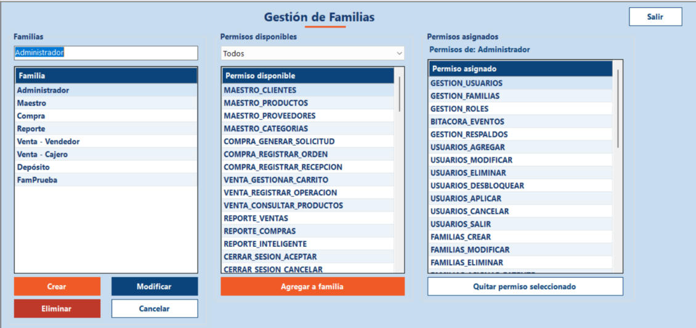

Inicio › Administrador › Gestión de Familias
Gestión de Familias
Una familia es un grupo de permisos que se arma una sola vez y se reutiliza en varios perfiles. Acá creás, renombrás y eliminás familias, y elegís qué permisos tiene cada una.
Dónde está: Administrador › Gestión de perfiles › Gestión de FamiliasLo usa: AdministradorAtajo: F1
Pasá el mouse por encima de cualquier botón o campo de la pantalla para ver qué hace.

Qué hace cada elemento
- 1Nombre de la familiaEscribí acá el nombre de una familia nueva, o cambiá el nombre de la que tengas seleccionada. Hasta 50 caracteres.
- 2Lista de familiasMuestra todas las familias que existen. Al tocar una, se carga su nombre arriba y sus permisos en el panel de la derecha.
- 3CrearCrea una familia nueva con el nombre que escribiste. Empieza sin permisos: se los agregás después.
- 4ModificarCambia el nombre de la familia seleccionada por el que escribiste en el campo.
- 5EliminarBorra la familia seleccionada. Si está en uso, antes te avisa qué va a pasar y te pide confirmar.
- 6CancelarLimpia la pantalla: vacía el nombre, deja de seleccionar la familia y vuelve a cargar las listas.
- 7Filtro por móduloFiltra los permisos disponibles por módulo (Usuarios, Compra, Venta...). "Todos" muestra la lista completa.
- 8Permisos disponiblesLos permisos que todavía no tiene la familia seleccionada. Elegí uno para poder agregarlo.
- 9Agregar a familiaSuma a la familia seleccionada el permiso que elegiste en la lista de disponibles.
- 10Permisos asignadosLos permisos que tiene hoy la familia seleccionada. Arriba dice de qué familia se trata ("Permisos de: ...").
- 11Quitar permiso seleccionadoLe saca a la familia el permiso que elegiste en la lista de asignados.
- 12SalirCierra esta pantalla y vuelve al menú principal.
Cómo hacerlo
Por ejemplo, una familia "Caja" con todo lo que necesita quien cobra.
- Escribí el nombre en el campo de arriba a la izquierda.
- Tocá Crear. Aparece el aviso "Familia creada correctamente".
- Elegí la familia nueva en la lista.
- En Permisos disponibles elegí un permiso y tocá Agregar a familia. Repetí con cada permiso que necesite.
Tené en cuenta: Una familia sola no da acceso a nada: tiene que estar incluida en un perfil (ver Gestión de Perfiles).
- Elegí la familia en la lista.
- Corregí el nombre en el campo.
- Tocá Modificar.
- Elegí la familia en la lista de la izquierda.
- Para sumar: usá el filtro por módulo si te ayuda, elegí el permiso en Permisos disponibles y tocá Agregar a familia.
- Para sacar: elegí el permiso en Permisos asignados y tocá Quitar permiso seleccionado.
- Si la familia ya la usa algún perfil, el sistema te avisa que esos perfiles ganan o pierden el permiso. Confirmá si estás de acuerdo.
Tené en cuenta: Los permisos "Cambiar contraseña" y "Cerrar sesión" son obligatorios: no se pueden quitar, así nadie queda sin poder salir ni proteger su cuenta.
- Elegí la familia en la lista.
- Tocá Eliminar.
- Leé el aviso: si la familia está en perfiles o tiene permisos, te dice que se van a quitar. Tocá Sí solo si estás seguro.
Tené en cuenta: Eliminar no se puede deshacer. Si la familia forma parte de tu propio perfil, vas a perder ese acceso vos mismo.
Para saber más
Mensajes que puede mostrar el sistema 12
| Mensaje | Qué significa y qué hacer |
|---|---|
| AvisoDebe seleccionar una Familia. | Tocaste Modificar, Eliminar, Agregar o Quitar sin elegir una familia en la lista. Elegí una y repetí. |
| AvisoDebe ingresar un nombre. / Debe ingresar un nombre válido. | El campo del nombre está vacío. Escribilo y volvé a intentar. |
| AvisoEl nombre no puede superar los 50 caracteres. | Acortá el nombre. |
| ErrorYa existe una Familia con ese nombre. | Los nombres no se pueden repetir. Usá otro o modificá la familia existente. |
| AvisoDebe seleccionar un Permiso. / Debe seleccionar un Permiso para quitar. | Falta elegir el permiso en la lista de disponibles (para agregar) o de asignados (para quitar). |
| ErrorEl componente ya pertenece a este elemento. | Ese permiso ya está en la familia, no hace falta agregarlo de nuevo. |
| ErrorEsta patente es obligatoria en todas las familias (cambiar contraseña y cerrar sesión) y no se puede quitar. | Esos permisos no se pueden quitar de ninguna familia. |
| ConfirmaciónLa familia está asignada a uno o más perfiles. Si la elimina, se quitará de esos perfiles. | Los usuarios con esos perfiles pierden lo que daba la familia. Confirmá solo si es lo que querés. |
| ConfirmaciónLa familia tiene permisos asignados. Si la elimina, se quitarán todos los permisos asociados. | Se borra la familia y sus asignaciones de permisos. |
| ConfirmaciónEsta familia forma parte de su propio perfil... | Si seguís (al eliminar o quitar un permiso), vos mismo perdés ese acceso. |
| Confirmación¿Está seguro que desea eliminar la familia seleccionada? | Confirmación de una familia sin uso. |
| ListoFamilia creada / modificada / eliminada correctamente. Permiso asignado / quitado correctamente. | La operación se guardó. |
Reglas a tener en cuenta 4
- Solo el Administrador puede entrar a esta pantalla.
- Cada botón depende de los permisos del perfil: si alguno aparece gris, tu perfil no tiene ese permiso.
- Un permiso no puede estar dos veces en la misma familia.
- Los cambios en una familia afectan a todos los perfiles que la usan, al instante para quienes inicien sesión después.
Temas relacionados
SneakRush · Ayuda del sistema · Gestión de Familias. Podés abrir esta ayuda desde cualquier pantalla con la tecla F1.